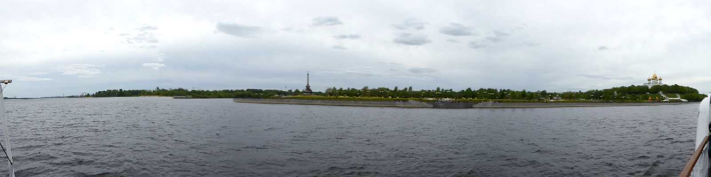
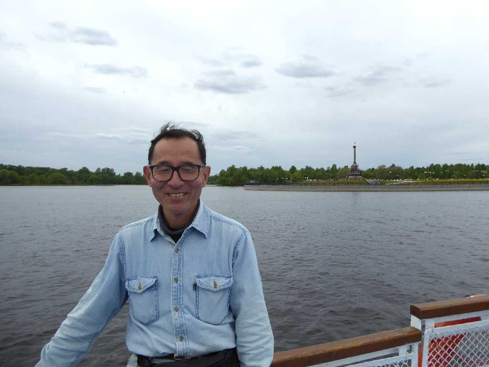
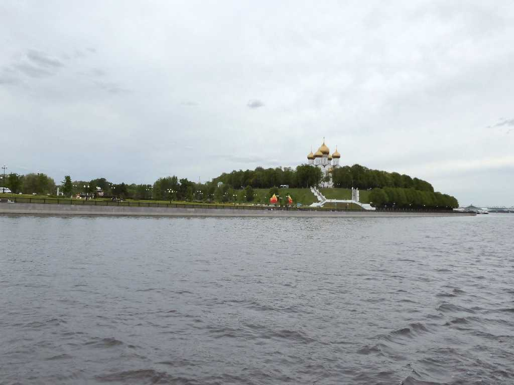
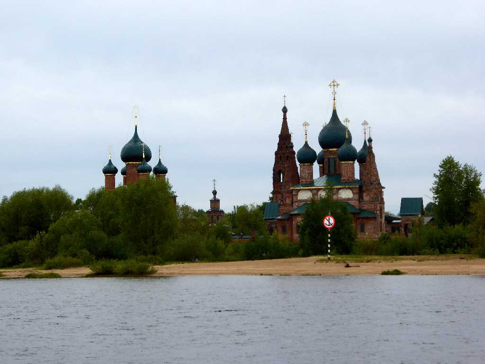

Junction of Kotorosl River with Volga River Yaroslavl Strelka Volga Cruise
ヴォルガ川にコトロスリ川がロストフの街から流れ込む合流地点に突き出したヤロスラヴリの矢

June 5 2017 Yaroslavl Strelka Volga Cruise
ヴォルガ川クルーズ

Uspensky Cathedral Yaroslavl Strelka
ヴォルガ川からウスペンスキー聖堂を望む

Church of St. John Chrysostom Volga Cruise Yaroslavl
１６５４年に創られた聖ヨハネクリソストム教会